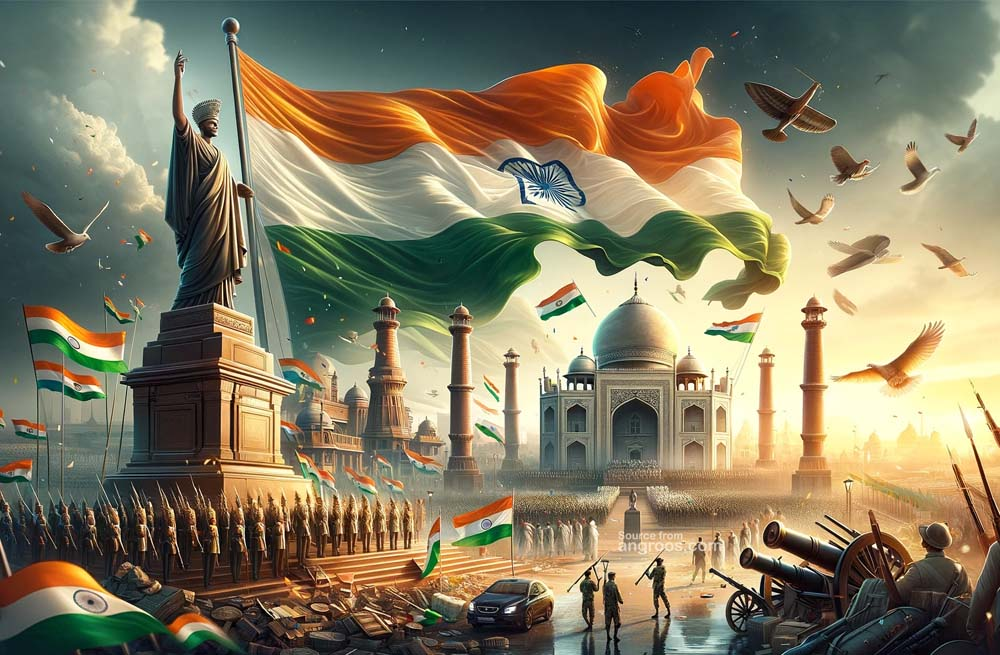

Demo on selector

Republic Day marks the adoption of India's constitution and the country's transition to a republic on January 26, 1950. Every year, the celebrations marking the day feature spectacular military and cultural pageantry. In New Delhi, armed forces personnel march along the Kartavya Path in an elaborate display of military might. The epic show on Kartavya Path eclipses everything else happening across the country on this auspicious day.
The celebrations, inaugurated with a grand parade, are held in the capital, New Delhi, from Raisina Hill near the Rashtrapati Bhavan (President's House), along the Kartavya Path, past India Gate, and onto the historic Red Fort. On this day, ceremonious parades take place at the Kartavya Path, which is performed as a tribute to India, its unity in diversity, and its rich cultural heritage by the states of India by building beautiful tableaus.